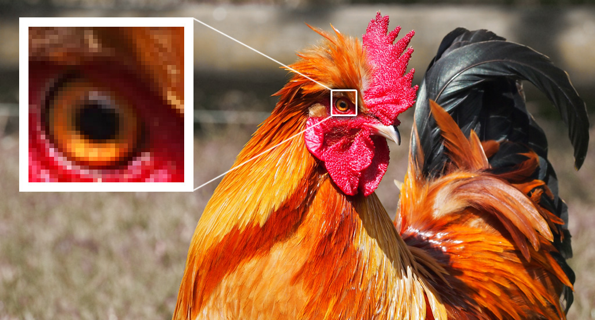
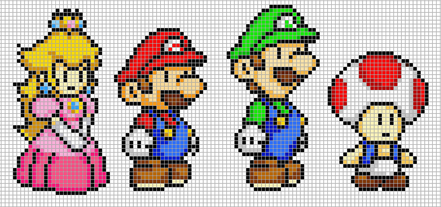
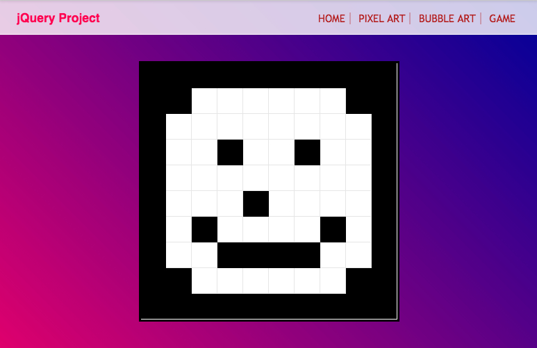
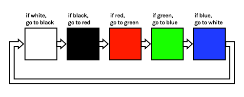

Pixel Art
Clicking elements and changing their classes
All Digital Images Are Made Of Pixels

Most images contain millions of pixels
Pixel Art

In “pixel art” the artist draws each individual pixel
Black and White Pixel Art

What can you create using only a hundred pixels?
Pixel Art Demo
Click a pixel to change it between black and white.
Code Your Own
Create a new file called pixelart.html and paste in this code:
Create the Drawing Board
Between your style tags, describe how the board should look:
.drawingBoard {
width: 300px;
height: 300px;
border-style: solid;
}
Between your body tags, add the drawing board div:
<div class="drawingBoard">
</div>
You should see an empty box on your page.
Drawing Board Positioning
Modify your drawingBoard style to center the board:
.drawingBoard {
width: 300px;
height: 300px;
border-style: solid;
margin-left: auto;
margin-right: auto;
}
Your box should now be in the middle of the page.
Creating the Pixels
Between your style tags, describe how each pixel should look:
.pixel {
width: 10%;
height: 10%;
border-style: solid;
border-width: 1px;
border-color: rgba(0,0,0,0.1);
}
Between your drawingBoard tags, create 100 pixel divs:
<div class="pixel"></div>
You should have pixels going off the bottom of your page :/
Stacking Pixels
Modify your drawingBoard to use a flex layout:
.drawingBoard {
width: 300px;
height: 300px;
border-style: solid;
margin-left: auto;
margin-right: auto;
display: flex;
flex-wrap: wrap;
}
Your pixels should now be stacked in your board.
Smaller Borders
Modify your pixel class to only use bottom and right borders:
.pixel {
width: 10%;
height: 10%;
border-style: solid;
border-width: 1px;
border-color: rgba(0,0,0,0.1);
border-top: 0;
border-left: 0;
}
You should now have thinner borders on each pixel box.
Get Those Pixels
Between your script tags, get all the pixels:
var allPixels = $('.pixel');
alert( allPixels.length );
Refresh, and you should see a pop-up which says “100”.
White Pixels
Create a new CSS class called white:
.white {
background-color: white;
}
Instead of the alert, add the class white to every pixel:
javascript
var allPixels = $('.pixel');
allPixels.addClass('white');
Wait For Clicks
After making all pixels white, also add a click watcher:
var allPixels = $('.pixel');
allPixels.addClass('white');
allPixels.click(changeColor);
Leave a blank line then create the changeColor function:
function changeColor() {
alert("Change the color!");
}
When you click pixels, you should see a popup message.
Black Pixels
Create a new CSS class called black:
.black {
background-color: black;
}
When a pixel is clicked, remove white and add black:
function changeColor() {
var pixel = $(this);
pixel.removeClass('white');
pixel.addClass('black');
}
Black and White Pixels
Modify your changeColor function to handle both colours:
function changeColor() {
var pixel = $(this);
if( pixel.hasClass('white') ) {
pixel.removeClass('white');
pixel.addClass('black');
}
else if( pixel.hasClass('black') ) {
pixel.removeClass('black');
pixel.addClass('white');
}
}
Pixels should now change between black and white.
All Done!

Your drawing board should now work!
Recreate your paper-based picture and take a screenshot.
Colourful Pixel Art
What could you create with more colours?
Coloured Pixel Art Demo
Click a pixel to cycle through the colour options
Going Full-Spectrum

We want pixels to change to the next colour when clicked.
Going Full-Spectrum
Modify your changeColor function to use more colours:
if( pixel.hasClass('white') ) {
pixel.removeClass('white');
pixel.addClass('black');
}
else if( pixel.hasClass('black') ) {
pixel.removeClass('black');
pixel.addClass('red');
}
else if( pixel.hasClass('red') ) {
pixel.removeClass('red');
pixel.addClass('white');
}
Your pixels should now change through more colours.
Demo Code
Change tabs between HTML, CSS and JS to look at the final code
All Done!
Your drawing board should now work!
Create a colourful picture and take a screenshot.
High Definition Pixel Art
Challenge:
Make your pixel artboard able to draw
more detailed images.

Pixel Art: Complete
Well done! Now let’s play with some bubbles…
Take me to the next chapter!